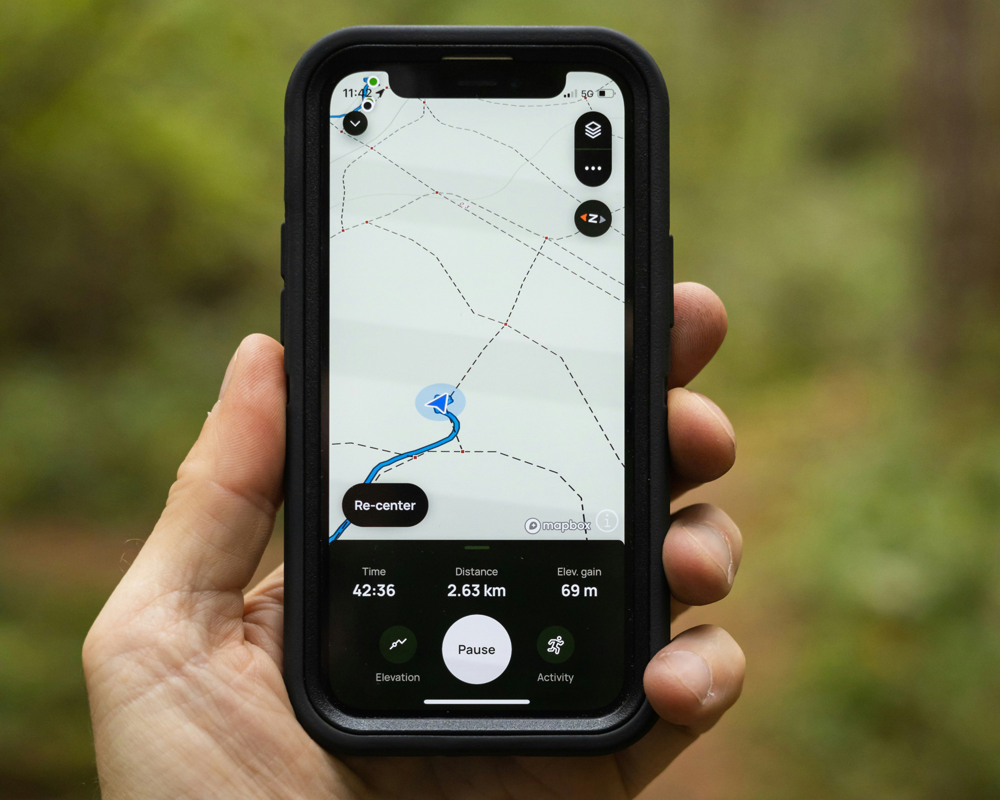

Why are we using StoryMaps in ARTHIST 322 / MENA 390?
In this course, you will use ArcGIS StoryMaps to investigate a question about the medieval Mediterranean. Your project should demonstrate how geography helps you understand the movement and interaction of people, objects, texts, ideas, and artistic traditions.
Your StoryMap should help you:
- ask a historical or art-historical question
- develop a central argument
- identify and interpret relevant locations, monuments, objects and texts
- use locations to demonstrate spatial relationships
- combine text, images, and maps
- communicate and showcase your findings to an audience beyond the classroom
Think as a Researcher, not Just a Cartographer:
The Digital Mediterranean Project is not simply about making a pretty map. The map is not the argument. The map is evidence that helps you make your argument.
A successful StoryMap does more than identify locations. It uses geography to reveal relationships, patterns, movements, connections, or changes that contribute to an art-historical argument.
Ask yourself:
- What is moving?
- Who is moving?
- Where & why does movement occur?
- What routes or networks connect different places?
- What is the relationship between people, monuments, objects, and texts in a spatial network?
- What changes when we look at the subject geographically?
- What can a map show that a conventional research paper cannot?
What will I create with StoryMaps?
Your project will combine:
Research
Scholarly sources and evidence
Argument
A clear central research question and thesis
Mapping
Locations, routes, networks, or spatial relationships
Visual Evidence
Works of art, architecture, objects, manuscripts, photographs, maps, etc.
Narrative
A coherent story that guides your audience through your argument
Reflection and Analysis
An explanation of what spatial analysis reveals about your topic
Digital Mediterranean Project
By the end of the Digital Mediterranean Project, you will be able to:
- Explain the historical and artistic significance of key monuments and objects as evidence for artistic and cultural interactions in the medieval Mediterranean world.
- Analyze the relationship between geography and artistic exchange by applying spatial reasoning and digital mapping tools (ArcGIS StoryMaps) to visualize historical narratives.
- Evaluate scholarly sources to construct a persuasive, evidence-based argument about patterns of artistic exchange and cultural interaction.
- Engage in interactive digital storytelling that synthesizes historical research, geographical data, and multimedia content.
- Communicate complex historical arguments effectively through a visually compelling and analytically rigorous digital format suitable for a broad audience.
Assignment Description:
This assignment introduces you to ArcGIS StoryMaps, a web-based story-authoring application. You will conduct a digital scholarly investigation and embark on a virtual journey through the art and architecture of the medieval Mediterranean world. You will create and share a vibrant digital map filled with monuments and objects accompanied by narrative and analytical text, images, sources, videos, audio, and other multimedia content.
You will combine geographic visualization with historical analysis of artistic production and cultural interaction in the medieval Mediterranean. This assignment will deepen your understanding of the region’s interconnected histories and spatial relationships (location, direction, movement, size, and shape in a 3-dimensional reality). Your objective is to apply your course knowledge to create an engaging and interactive digital showcase that demonstrates artistic production and cultural interactions within the political, religious, and economic context of the medieval Mediterranean world.
Some cities and places you will learn about in this course:
- Constantinople
- Cordoba
- Outskirts of Cordoba (where Madinat al-Zahra is located)
- Damascus
- Eastern Jordan (where Qusayr Amra is located)
- Jerusalem
- Fustat (Old Cairo)
- Palermo
- Pisa
- Ravenna
- Mallorca
- Mecca
- Saint Catherine (Mount Sinai; Sinai Peninsula)
- Venice
- Toledo (Spain)
Final Project Workshop:
We will have a workshop session with Northwestern Library’s GIS Research Specialist, Mech Frazier.
Before class, please sign in to the Northwestern GIS page and review our GIS website and the Getting Started guidelines prepared by Mech Frazier.
- Northwestern University provides all students with web-based, free ArcGIS tools using their NET ID. Signing in is easy and quick.
- You are welcome to use your own or any library computer.
- If you are unfamiliar with ArcGIS StoryMaps, do not worry. The StoryMaps application is easy to learn, fun to explore, and helpful for this assignment.
- As your professor, I am always here to answer any questions you may have. Our GIS research specialist, Mech Frazier, is also available to help at any stage of your assignment. Please do not hesitate to book an appointment with Mech Frazier (Book Here) or email gis@northwestern.edu.
Cartography in the Mediterranean
- GIS and ArcGIS StoryMaps with Research Specialist Mech Frazier.
- Reading: Emilie Savage-Smith, “Cartography,” in A Companion to Mediterranean History, ed. Peregrine Horden and Sharon Kinoshita (Malden, MA: Wiley Blackwell, 2014), 184–99.
Submission Deadlines:
- Please submit your visual analysis paper as a Microsoft Word document (*.doc, *docx) via Canvas.
- Late submissions will incur a one-third letter grade reduction per day during the 48-hour grace period. Approved excuses from the University Health Center, AccessibleNU, or your College Advisor might extend the deadline to the 48-hour grace period without penalty. Submissions received after the 48-hour grace period will receive a score of zero.
- Your paper drafts may be reviewed during office hours or by appointment, which can be scheduled in advance.